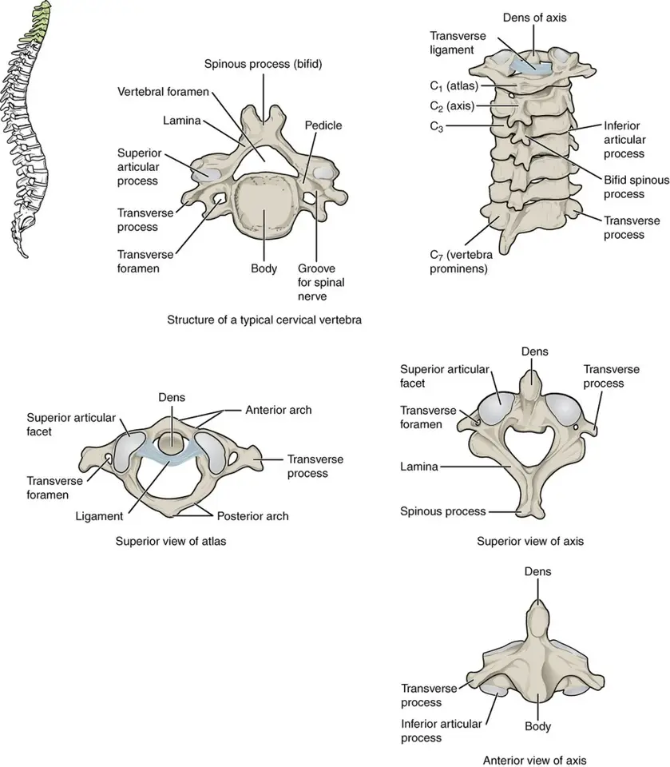
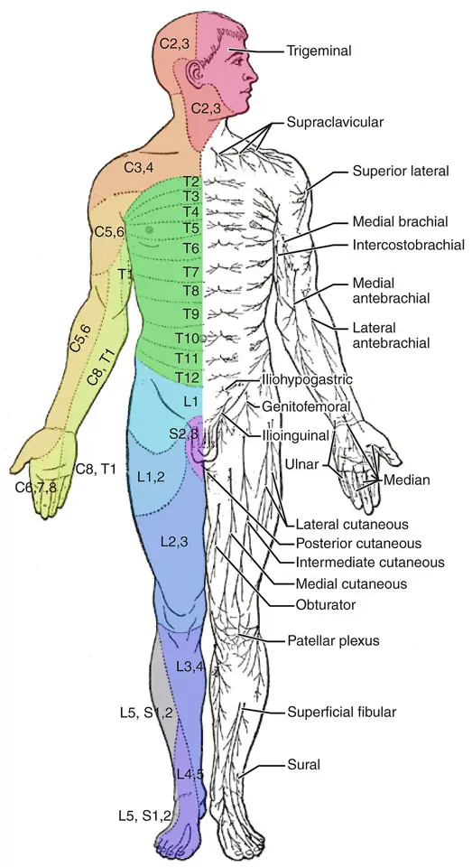

DX.2 — Radiculopathie cervicale dégénérative
Une douleur cervicale qui irradie dans un dermatome du bras, avec paresthésies et réflexe diminué, oriente vers une radiculopathie cervicale dégénérativeS2. Le médecin écarte d’abord drapeaux rouges et myélopathie, puis il traite de façon conservatrice, car plus de 90 % des patients guérissent sans chirurgieS2S3.
Ce cours DX.2 reprend les sources citées ; aucun médecin ne l’a encore validé cliniquement.
1. Définition
La radiculopathie cervicale dégénérative est l’atteinte d’une racine cervicale, de C5 (cinquième racine cervicale) à D1 (première racine dorsale), comprimée par une hernie discale ou une sténose foraminaleS2.
2. Épidémiologie (Suisse, puis Europe)
En Suisse, la revue des neurochirurgiens des HUG (Hôpitaux universitaires de Genève) rappelle que plus de la moitié des adultes connaissent au moins une cervicobrachialgie au cours de leur vieS2. La radiculopathie « vraie » reste pourtant moins fréquente que la cervicalgie, avec une prévalence de 3,3 cas pour 1000 personnesS2.
Les chiffres lus situent le pic d’incidence aux quatrième et cinquième décennies, tandis que la racine C7 (septième racine cervicale) domine nettement parmi les racines atteintesS2. Les hommes sont plus souvent touchés que les femmes, dans un rapport de 1,6 pour 1S2.
Chiffres lus : fréquence, terrain et racines
| Indicateur | Valeur | Population ou période | Source |
|---|---|---|---|
| Prévalence des cervicobrachialgies | 83,2 pour 100 000 personnes | Revue suisse, 2015 | S2 |
| Adultes ayant eu au moins une cervicobrachialgie | Plus de la moitié | Population adulte | S2 |
| Prévalence de la radiculopathie « vraie » | 3,3 pour 1000 personnes | Revue suisse, 2015 | S2 |
| Rapport hommes / femmes | 1,6 pour 1 | Radiculopathie sur hernie | S2 |
| Incidence globale des cervicalgies | 15 % par an ; 23,1 pour 1000 personnes-années | Cervicalgies toutes causes | S2 |
| Pic d’incidence | Quatrième et cinquième décennies | Revue suisse, 2015 | S2 |
| Modifications radiologiques cervicales | 85 % des patients dans la septième décennie, le plus souvent asymptomatiques | Imagerie | S2 |
| Disques C5-C6 et C6-C7 | Plus de 90 % des maladies discales symptomatiques | Revue suisse, 2015 | S2 |
| Racine C7 (disque C6-C7) | 69 % des radiculopathies | Revue suisse, 2015 | S2 |
| Racine C6 (disque C5-C6) | 19 % | Revue suisse, 2015 | S2 |
| Racine C8 (disque C7-D1) | 10 % | Revue suisse, 2015 | S2 |
| Racine C5 (disque C4-C5) | 2 % | Revue suisse, 2015 | S2 |
| Prévalence des cervicalgies en Europe occidentale | 4,6 % ; incidence 0,9 % | Données citées par les HUG, 2021 | S3 |
Aucune source suisse lue ne chiffre la radiculopathie par canton ; ces valeurs proviennent de la revue genevoise et des séries qu’elle citeS2S3.
3. Physiopathologie
La hernie discale apparaît tôt dans la dégénérescence du segment mobile, car l’âge altère le disque et rend l’anneau fibreux vulnérable aux déchiruresS2. La douleur radiculaire associe une déformation mécanique de la racine et une irritation chimique, entretenue par des cytokines pro-inflammatoires et par le facteur de croissance nerveuseS2.
Une hernie « molle » extrudée ou séquestrée tend à se résorber spontanément, ce qui explique la bonne évolution sans chirurgie de la majorité des patientsS2. La fenêtre des mécanismes distingue la hernie molle de la sténose foraminale osseuse, et la vertèbre annotée situe la racine dans son sillonS2S6.
Mécanismes : ce qui comprime, ce qui fait mal
| Mécanisme | Ce qui se passe | Conséquence clinique | Source |
|---|---|---|---|
| Hernie discale « molle » | Le noyau franchit l’anneau fibreux déchiré et vient au contact de la racine | Douleur brachiale souvent aiguë ; résorption spontanée possible si la hernie est extrudée ou séquestrée | S2 |
| Sténose foraminale osseuse | Arthrose et ostéophytes rétrécissent le trou de conjugaison | Le scanner la montre mieux que l’imagerie par résonance magnétique | S2 |
| Déformation mécanique | La racine est étirée et comprimée | L’extension et la rotation homolatérale aggravent la douleur (manœuvre de Spurling) | S2 |
| Irritation chimique | Cytokines et facteur de croissance nerveuse sensibilisent la racine | La douleur peut dépasser l’importance de la compression visible | S2 |
| Compression médullaire associée | Une hernie médiane peut comprimer la moelle | Myélopathie : maladresse, spasticité, troubles sphinctériens, chirurgie | S2 |
Vertèbre cervicale typique : où passe la racine
Vertèbre cervicale typique, vue supérieure. OpenStax publie cette planche en couleurs sous licence CC BY 3.0 ; la vertèbre typique figure en haut, au centreS6.

Le lecteur regarde d’abord seul l’image (vertèbre cervicale typique, vue supérieure), puis il cherche lui-même les structures.
La copie annotée (vertèbre cervicale typique, vue supérieure) porte les repères numérotés que la lecture guidée explique.
- 1. Le canal vertébral contient la moelle ; une hernie médiane le rétrécit et menace la moelleS2.
- 2. Le corps vertébral porte le disque ; une hernie postéro-latérale part de son bord postérieurS2.
- 3. Le sillon du nerf spinal conduit la racine vers le foramen, où une hernie ou un ostéophyte peut l’écraserS2.
- 4. Le processus articulaire forme l’articulation zygapophysaire, dont l’arthrose rétrécit aussi le foramenS2.
Ce que l’image décide. L’image n’établit pas le diagnostic ; elle explique pourquoi une compression latérale touche une racine, alors qu’une compression médiane menace la moelleS2.

4. Démarche diagnostique
La démarche part d’une douleur cervicale irradiant au membre supérieur, puis elle vérifie l’absence de drapeau rouge avant toute conclusion mécaniqueS3. Le médecin localise ensuite la racine par le territoire sensitif, le réflexe et le muscle déficitaire, selon la séquence en six étapesS2.
Il recherche systématiquement une myélopathie, car sa présence change la conduite vers la chirurgie, quel que soit le niveau de douleurS2. Enfin, il ne demande l’imagerie qu’en cas de déficit, de drapeau rouge ou de douleur persistante, et il corrèle toujours l’image à la cliniqueS3.
Le tableau des diagnostics à écarter rassemble les pièges décrits par les neurochirurgiens genevois, de l’épaule au syndrome coronarienS2.
Séquence diagnostique en six étapes
| Étape | Question | Outil | Seuil ou résultat | Conduite | Source |
|---|---|---|---|---|---|
| 1. Urgence | Existe-t-il un drapeau rouge ? | Anamnèse : fièvre, cancer, perte de poids, traumatisme, immunosuppression, drogue intraveineuse | Un seul drapeau suffit | Bilan ciblé le jour même ; voir point 5 | S3 |
| 2. Mécanique ou inflammatoire | Quel horaire ? | Horaire, raideur matinale, effet des anti-inflammatoires | Raideur matinale de plus de 30 minutes : profil inflammatoire | Si inflammatoire : CRP (protéine C réactive) et autre diagnostic | S3 |
| 3. Radiculaire | La douleur suit-elle un dermatome ? | Trajet, paresthésies, Spurling, test d’abduction de l’épaule | Douleur brachiale reproduite ou soulagée | Localiser la racine | S3S2 |
| 4. Niveau | Quelle racine ? | Sensibilité, réflexes, force (tableau du point 6) | Concordance de deux éléments sur trois | Racine retenue : C5, C6, C7 ou C8 | S2 |
| 5. Moelle | Existe-t-il une myélopathie ? | Réflexes vifs, Babinski, Lhermitte, marche, sphincters | Un signe central suffit | Imagerie par résonance magnétique et avis neurochirurgical | S2 |
| 6. Gravité motrice | Le déficit est-il important ou progressif ? | Cotation de la force musculaire répétée | Déficit significatif rapide ou progressif | Avis neurochirurgical urgent | S2 |
Cette séquence évite deux erreurs fréquentes : traiter à l’aveugle une myélopathie et opérer une image sans corrélation cliniqueS2S3.
Diagnostics différentiels à écarter
| Diagnostic | Ce qui le distingue | Examen qui tranche | Source |
|---|---|---|---|
| Rupture de la coiffe des rotateurs (contre C5) | Le biceps reste fort ; l’épaule est douloureuse à la mobilisation et à la palpation | Examen de l’épaule, échographie selon l’orientation | S2 |
| Atteinte du nerf suprascapulaire (contre C5) | Deltoïde, grand pectoral et biceps restent intacts | Électroneuromyogramme | S2 |
| Syndrome du tunnel carpien (contre C6) | La percussion du canal carpien reproduit les douleurs | Électroneuromyogramme | S2 |
| Nerf interosseux postérieur (contre C7) | Aucune atteinte sensitive ; biceps, rond pronateur et fléchisseur radial du carpe préservés | Électroneuromyogramme | S2 |
| Nerf ulnaire au coude (contre C8) | Contusion ou compression au coude | Électroneuromyogramme | S2 |
| Syndrome de Parsonage-Turner | Douleur intense de l’épaule, puis amyotrophie et faiblesse | Électroneuromyogramme | S2 |
| Tumeur radiculaire | Neurofibrome, schwannome ou méningiome | Imagerie par résonance magnétique | S2 |
| Syringomyélie | Associée ou non à une malformation d’Arnold-Chiari | Imagerie par résonance magnétique | S2 |
| Arrachement du plexus brachial | Anamnèse traumatique, déficit flasque de plusieurs racines | Imagerie et électroneuromyogramme | S2 |
| Plexite brachiale zostérienne | Éruption de zona dans le territoire | Examen cutané | S2 |
| Sclérose latérale amyotrophique | Déficit moteur sans douleur, fasciculations | Avis neurologique, électroneuromyogramme | S2 |
| Défilé thoracique | Symptômes positionnels du membre supérieur | Avis spécialisé | S2 |
| Maladie coronarienne | Douleur du bras gauche à l’effort | Électrocardiogramme et bilan cardiaque | S2 |
| Dissection de l’artère vertébrale | Douleur unilatérale dans le territoire C5-C6, rare, avec cervicalgie postérieure et céphalée occipitale | Imagerie vasculaire en urgence (DX.7) | S5 |
5. Anamnèse ciblée et drapeaux rouges
L’anamnèse précise le trajet, l’horaire, le facteur déclenchant et le retentissement, car ces quatre éléments orientent vers la racine et vers la gravitéS2S3. Les patients décrivent souvent une douleur invalidante et insomniante, avec une limitation douloureuse des mouvements de la têteS2.
Le médecin cherche ensuite les drapeaux rouges, puis les drapeaux jaunes qui annoncent la chronicité, sans les confondreS3. Le questionnaire de handicap cervical, version française du Neck Disability Index, chiffre le retentissement en dix domaines et sert de mesure de suiviS3.
Questions ciblées et drapeaux rouges
| Question | Réponse qui alarme | Hypothèse | Conduite | Source |
|---|---|---|---|---|
| Avez-vous de la fièvre, des céphalées ou des troubles visuels ? | Oui | Infection, méningite, dissection | Examen neurologique, CRP, imagerie ciblée | S3 |
| Avez-vous eu un cancer ou perdu du poids sans raison ? | Oui | Métastase vertébrale | Imagerie par résonance magnétique rapide | S3 |
| Avez-vous fait une chute ou un accident ? | Oui | Fracture, hernie traumatique | Scanner si suspicion de fracture ; fixation si hernie traumatique | S3S2 |
| Prenez-vous un immunosuppresseur ou une drogue intraveineuse ? | Oui | Spondylodiscite | CRP, imagerie par résonance magnétique | S3 |
| La main est-elle maladroite, la marche instable ? | Oui | Myélopathie | Imagerie par résonance magnétique, avis neurochirurgical | S2 |
| Avez-vous des troubles urinaires ou de l’érection ? | Oui | Compression médullaire | Urgence neurochirurgicale | S2 |
| La faiblesse progresse-t-elle d’un jour à l’autre ? | Oui | Déficit progressif | Avis neurochirurgical urgent | S2 |
| La douleur persiste-t-elle la nuit, au repos ? | Oui | Cause inflammatoire, infectieuse ou tumorale | CRP, imagerie | S3 |
| La douleur cervicale est-elle brutale, inhabituelle, avec céphalée ? | Oui | Dissection artérielle | Imagerie vasculaire le jour même | S5 |
Drapeaux jaunes : facteurs de chronicité
| Drapeau jaune | Ce qu’il signifie | Réponse du médecin | Source |
|---|---|---|---|
| Douleur permanente, diurne et nocturne | Sensibilisation, retentissement | Évaluer l’humeur, viser la fonction | S3 |
| Douleur attribuée à un événement professionnel ou accidentel ancien | Enjeu assécurologique | Documenter l’examen initial avec soin | S3 |
| Conflit médico-légal ou médicosocial | Facteur de mauvais pronostic | Coordination avec les assurances | S3 |
| Arrêt de travail prolongé | Désinsertion | Reprise progressive planifiée | S3 |
| Handicap disproportionné aux lésions | Catastrophisme | Éducation, thérapie active | S3 |
| Dépression, anxiété | Mauvaise santé psychologique | Prise en charge psychothérapeutique, antidépresseur si indiqué | S3S2 |
6. Examen physique ciblé, région par région
L’examen compare les deux côtés et note chaque élément, car la concordance entre dermatome, réflexe et muscle identifie la racineS2. Chaque région a sa fenêtre : cou, racines du membre supérieur, épaule, avant-bras et main, moelle et membres inférieurs et état généralS2S3.
La carte des dermatomes aide à relier une zone de paresthésies à sa racine, même si les territoires se chevauchent d’un sujet à l’autreS7.
Cou : inspection, palpation, mobilité, manœuvres
| Élément | Technique | Résultat | Interprétation | Source |
|---|---|---|---|---|
| Inspection | Statique, posture, asymétrie, masses, peau | Attitude antalgique en inclinaison | Contracture d’accompagnement | S3 |
| Palpation | C2 (deuxième vertèbre cervicale) est la première épineuse palpable ; C7 la plus proéminente | Sensibilité ou spasme paravertébral | Non spécifique | S3 |
| Flexion-extension | Distance menton-sternum | Distance augmentée | Raideur douloureuse | S3 |
| Rotation | Mesure derrière le patient assis | Normale au-delà de 60 % ; la moitié se fait en C1-C2 | Limitation douloureuse fréquente dans la hernie | S3S2 |
| Manœuvre de Spurling | Compression axiale avec rotation homolatérale et extension | Douleur brachiale reproduite | Argument pour une compression radiculaire | S2S3 |
| Test d’abduction de l’épaule | Le patient pose la main sur la tête | Douleur radiculaire soulagée | Argument pour une compression radiculaire | S3 |
Racines du membre supérieur : la grille des quatre racines
| Racine (disque) | Part des cas | Douleur et paresthésies | Réflexe diminué | Faiblesse | Source |
|---|---|---|---|---|---|
| C5 (C4-C5) | 2 % | Épaule | Deltoïdien et pectoral | Deltoïde | S2 |
| C6 (C5-C6) | 19 % | Avant-bras, pouce, versant radial de l’avant-bras | Tricipital, brachioradial | Fléchisseurs du bras | S2 |
| C7 (C6-C7) | 69 % | Doigts 2 et 3, tous les bouts de doigts | Tricipital, pronateur | Extenseurs du bras (main tombante) | S2 |
| C8 (C7-D1) | 10 % | Doigts 4 et 5 | Cubito-pronateur | Muscles intrinsèques de la main | S2 |
La revue genevoise attribue le réflexe tricipital à C6 et à C7 ; un réflexe tricipital aboli ne suffit donc pas, seul, à trancher entre ces deux racinesS2.
Épaule : ce qui doit rester normal
| Élément | Technique | Résultat dans la radiculopathie C5 | Résultat dans une atteinte de l’épaule | Source |
|---|---|---|---|---|
| Mobilisation passive | Abduction, rotations | Indolore | Douloureuse, d’allure mécanique | S2 |
| Palpation | Tubercules, bourse | Indolore | Hypersensibilité | S2 |
| Force du biceps | Flexion du coude contre résistance | Diminuée, car le biceps dépend aussi de C5 | Normale dans une rupture isolée de la coiffe | S2 |
| Force de l’abduction | Abduction contre résistance | Diminuée | Diminuée | S2 |
Avant-bras et main : nerfs périphériques à ne pas confondre
| Signe | Technique | Racine évoquée | Piège périphérique | Source |
|---|---|---|---|---|
| Paresthésies du pouce | Cartographie au toucher | C6 | Canal carpien : percussion positive | S2 |
| Main tombante | Extension du poignet et des doigts | C7 | Nerf interosseux postérieur : aucune atteinte sensitive | S2 |
| Faiblesse des intrinsèques | Écartement des doigts | C8 | Nerf ulnaire au coude ; nerf interosseux antérieur | S2 |
| Paresthésies des doigts 4 et 5 | Cartographie au toucher | C8 | Nerf ulnaire au coude | S2 |
Moelle et membres inférieurs : signes centraux
| Signe | Technique | Anomalie | Interprétation | Source |
|---|---|---|---|---|
| Réflexes ostéotendineux | Quatre membres | Hyperréflexie | Atteinte médullaire | S2 |
| Tonus | Mobilisation passive | Spasticité | Atteinte médullaire | S2 |
| Réflexe cutané plantaire | Stimulation de la plante | Signe de Babinski | Atteinte de la voie pyramidale | S2 |
| Marche | Observation, polygone | Élargissement du polygone de sustentation | Myélopathie | S2 |
| Signe de Lhermitte | Flexion du cou | Décharge électrique dans le dos ou les membres | Souffrance médullaire | S2 |
| Sphincters | Anamnèse dirigée | Trouble de l’initiation de la miction | Premier symptôme sphinctérien de la myélopathie | S2 |
État général, ganglions, poumons et vaisseaux
| Élément | Recherche | Anomalie | Orientation | Source |
|---|---|---|---|---|
| Température | Mesure | Fièvre | Infection, spondylodiscite | S3 |
| Ganglions cervicaux | Palpation | Adénopathie | Néoplasie, infection | S3 |
| Poumons | Auscultation, sommet | Anomalie apicale | Douleur référée viscérale | S3 |
| Vaisseaux | Examen vasculaire | Souffle, asymétrie | Douleur vasculaire, défilé thoracique | S3 |
| Peau du membre | Inspection | Vésicules en bande | Zona | S2 |
Dermatomes du membre supérieur
Dermatomes, vue antérieure. OpenStax publie cette carte colorée des dermatomes sous licence CC BY 4.0 ; la moitié gauche du dessin porte les étiquettes radiculairesS7.

Le lecteur regarde d’abord seul l’image (dermatomes, vue antérieure), puis il cherche lui-même les structures.
La copie annotée (dermatomes, vue antérieure) porte les repères numérotés que la lecture guidée explique.
- 1. C3 (troisième racine cervicale) et C4 (quatrième racine cervicale) couvrent la base du cou et le haut de l’épaule ; leur atteinte donne une douleur cervicale sans irradiation brachialeS7.
- 2. C5 et C6 occupent le moignon de l’épaule et le bord latéral du bras, territoire de la douleur de C5S7S2.
- 3. C8 et D1 occupent le bord ulnaire de l’avant-bras et de la main, territoire des doigts 4 et 5S7S2.
- 4. Les doigts reçoivent C6, C7 et C8 ; le pouce oriente vers C6 et les doigts médians vers C7S7S2.
- Les dermatomes se chevauchent ; un territoire isolé ne suffit pas sans réflexe ni déficit concordantS2.
Ce que l’image décide. La carte confirme la cohérence entre plainte et racine ; une discordance oriente vers un nerf périphérique ou vers un autre diagnosticS2.

7. Approche syndromique
La radiculopathie appartient au syndrome radiculaire, distinct du syndrome axial pur et du syndrome médullaire, que la Phase A sépare par la topographie des signesS2S3. La fenêtre des syndromes montre que l’association d’une douleur brachiale et de signes centraux définit la radiculo-myélopathie, qui relève de la chirurgieS2.
Syndromes voisins : reconnaître et orienter
| Syndrome | Signes | Diagnostic du lot | Conduite | Source |
|---|---|---|---|---|
| Axial mécanique | Douleur du cou sans irradiation ni déficit | DX.1 cervicalgie commune | Éducation, activité, pas d’imagerie précoce | S3 |
| Radiculaire | Douleur brachiale dans un dermatome, réflexe ou force diminués | DX.2 radiculopathie | Traitement conservateur, puis chirurgie si critère | S2 |
| Médullaire | Maladresse, spasticité, Babinski, sphincters | DX.3 myélopathie | Chirurgie de décompression | S2 |
| Radiculo-médullaire | Douleur brachiale et signes centraux | DX.2 et DX.3 | Pas de place pour le traitement conservateur | S2 |
| Inflammatoire | Raideur matinale, réveils en seconde partie de nuit | DX.8, DX.9, DX.10 | CRP, imagerie ciblée | S3 |
| Vasculaire | Cervicalgie brutale, céphalée, Horner | DX.7 dissection | Imagerie vasculaire en urgence | S5 |
Le cas des HUG montre comment un déficit tricipital et des paresthésies des doigts 3 et 4 conduisent à discuter trois racines avant l’imagerieS3.
Cas des HUG : homme de 39 ans après une séance de musculation
| Étape | Constat | Raisonnement | Source |
|---|---|---|---|
| Anamnèse | Douleur cervicale constante irradiant vers l’épaule droite, apparue après la musculation, résistante à l’antalgie classique | Début mécanique, irradiation brachiale | S3 |
| Symptômes | Paresthésies des doigts 3 et 4 | Territoire de C7 ou de C8 | S3S2 |
| Mobilité | Distance menton-sternum de 4 à 18 cm, rotation de 70° des deux côtés, douleur de l’épaule reproduite | Raideur douloureuse sans limitation majeure | S3 |
| Force et réflexes | Triceps coté 4 sur 5, réflexes symétriques peu vifs | Le triceps dépend de C6 et de C7 | S3S2 |
| Biologie | Laboratoire sans particularité | Pas d’argument inflammatoire | S3 |
| Question posée | Compression de C6, de C7 ou de C8 ? | Les signes ne tranchent pas seuls | S3 |
| Examens | Imagerie par résonance magnétique pour la compression ; électroneuromyogramme en cas de doute | L’examen confirme le niveau | S3 |
| Diagnostics différentiels | Plexopathie traumatique ou par compression-étirement ; mononévrite multiple | Ils imitent une atteinte radiculaire | S3 |
Ce cas illustre la règle des HUG : l’imagerie confirme une hypothèse clinique, elle ne la remplace jamaisS3.
8. Diagnostic positif et critères
Le diagnostic positif repose sur la concordance entre une radiculalgie systématisée, un déficit sensitif, réflexe ou moteur de la même racine, et une compression visible au même niveauS2. Les critères séparent ce qui suffit de ce qui ne suffit pas, notamment une hernie découverte sans plainte correspondanteS2S3.
Critères cliniques et d’imagerie
| Critère | Exigence | Ce qui ne suffit pas | Source |
|---|---|---|---|
| Clinique | Douleur du membre supérieur dans un territoire radiculaire, avec paresthésies distales | Une cervicalgie seule | S2 |
| Examen | Réflexe, force ou sensibilité concordants avec une racine | Un Spurling isolé | S2S3 |
| Imagerie | Hernie ou sténose foraminale au niveau attendu, en séquence T2 (pondérée en T2) | Des modifications dégénératives, présentes chez 85 % des sujets dans la septième décennie | S2 |
| Corrélation | Image et clinique concordantes | Une image sans clinique, car l’imagerie ne distingue pas douloureux et indolores | S3 |
| Électrophysiologie | Atteinte de la racine incriminée, dès trois semaines | Un examen trop précoce, encore normal | S2 |
9. Examens complémentaires
L’imagerie par résonance magnétique est l’examen requis, et la séquence T2 se montre la plus sensible et la plus spécifique pour la hernieS2. Les HUG recommandent une radiographie après 50 ans, en cas de symptômes modérés à sévères au-delà de 6 semaines, de déficit, de traumatisme ou de risque infectieux ou tumoralS3.
Le tableau des examens ciblés précise indication, résultat, interprétation et conduite, et la fenêtre d’électrophysiologie fixe son délaiS2S3.
Examens ciblés : indication, résultat, interprétation, conduite
| Examen | Indication | Résultat attendu | Interprétation | Conduite | Source |
|---|---|---|---|---|---|
| Aucun examen | Radiculalgie sans déficit ni drapeau rouge, de moins de 6 semaines | — | L’évolution spontanée est favorable | Traitement conservateur et réévaluation | S3S2 |
| Radiographie face, profil, obliques | Plus de 50 ans ; symptômes au-delà de 6 semaines ; déficit ; traumatisme ; infection ou néoplasie | Pincement, ostéophytes, foramens rétrécis | Peu spécifique | Imagerie par résonance magnétique si déficit | S3 |
| Imagerie par résonance magnétique | Déficit, suspicion de myélopathie, douleur réfractaire, avant chirurgie | Hernie, sténose, hypersignal T2 médullaire | Corrélée à la racine clinique | Avis neurochirurgical si concordance et critère | S2S3 |
| Scanner | Sténose foraminale osseuse ; fracture suspectée | Ostéophyte foraminal | Moins utile de C6 à D1, à cause des épaules | Complément de l’imagerie par résonance magnétique | S2S3 |
| Myéloscanner | Contre-indication à l’imagerie par résonance magnétique ou résultat peu concluant | Compression radiculaire | Examen invasif, avec complications possibles | Parfois courte hospitalisation | S2 |
| Électroneuromyogramme | Doute diagnostique, plusieurs racines possibles, atteinte périphérique | Dénervation dans les muscles de la racine | Fiable dès trois semaines après la compression | Distingue racine et nerf périphérique | S2S3 |
| Potentiels évoqués | Doute sur une atteinte médullaire | Conduction ralentie | Atteinte du premier motoneurone | Avis neurochirurgical | S2 |
| CRP | Profil inflammatoire, fièvre | Élevée | Cause infectieuse ou inflammatoire | Autre diagnostic du lot | S3 |
Électrophysiologie : quand et pourquoi
| Situation | Apport | Limite | Source |
|---|---|---|---|
| Anamnèse et examen peu orientants | Localise la racine | Normal avant trois semaines | S2 |
| Plusieurs racines possibles | Sépare les niveaux | Ne montre pas la cause | S2 |
| Suspicion de nerf périphérique | Distingue canal carpien, nerf ulnaire, plexopathie | Nécessite un examinateur expérimenté | S2S3 |
| Suspicion médullaire | Potentiels évoqués moteurs et sensitifs | Complète l’imagerie, sans la remplacer | S2 |
La grille de lecture du compte rendu énumère les signes radiologiques de souffrance médullaire, qui changent la conduite même chez un patient qui ne se plaint que du brasS2.
Compte rendu d’imagerie : ce qui change la conduite
| Signe décrit | Signification | Conduite | Source |
|---|---|---|---|
| Hernie postéro-latérale ou foraminale au niveau clinique | Cause de la radiculopathie | Traitement conservateur, puis chirurgie si critère | S2 |
| Sténose foraminale osseuse | Compression par ostéophyte | Scanner complémentaire avant chirurgie | S2 |
| Diminution du diamètre antéro-postérieur du canal | Myélopathie radiologique possible | Examen neurologique complet, avis neurochirurgical | S2 |
| Hypersignal médullaire en T2 | Souffrance médullaire | Avis neurochirurgical | S2 |
| Hyposignal médullaire en T1 (pondération T1) | Souffrance médullaire | Avis neurochirurgical | S2 |
| Surface de section ou espace disponible pour la moelle réduits | Myélopathie radiologique | Avis neurochirurgical | S2 |
| Modifications dégénératives sans compression | Vieillissement banal | Aucune conduite propre | S2S3 |
10. Arbre décisionnel
L’arbre commence par les drapeaux rouges, se poursuit par la recherche d’une myélopathie, puis il gradue la conduite selon le déficit et la durée de la douleurS2S3. La version détaillée précise pour chaque branche le délai et le spécialiste concernéS2.
Arbre décisionnel détaillé
| Situation | Décision | Délai | Source |
|---|---|---|---|
| Drapeau rouge présent | Bilan de la cause grave (fracture, infection, tumeur, dissection) | Le jour même | S3S5 |
| Signes de myélopathie | Imagerie par résonance magnétique et neurochirurgie ; pas de traitement conservateur | Rapide | S2 |
| Déficit moteur significatif d’apparition rapide ou progressif | Imagerie par résonance magnétique et avis neurochirurgical pour chirurgie | Urgent | S2 |
| Douleur intolérable malgré une analgésie adéquate | Avis neurochirurgical | Rapide | S2 |
| Radiculalgie sans déficit, moins de 6 semaines | Traitement conservateur, pas d’imagerie | Réévaluation à 2 à 6 semaines (déduction du seuil d’imagerie des HUG) | S3 |
| Douleur au-delà de 6 semaines | Radiographie, puis imagerie par résonance magnétique si concordance clinique recherchée | Programmé | S3 |
| Douleur résistante 6 à 8 mois à un traitement bien conduit | Discussion chirurgicale avec le patient | Programmé | S2 |
11. Prise en charge selon les recommandations suisses
11.A — But. La prise en charge soulage la douleur et préserve la fonction, car plus de 90 % des patients s’améliorent sans chirurgie à moyen termeS2. Elle protège aussi la racine et la moelle, en reconnaissant sans délai les critères chirurgicaux absolusS2.
11.B — Moyens. Le traitement conservateur associe activité réduite, antalgie, anti-inflammatoire ou corticoïde dégressif et physiothérapie, pendant six à huit mois si nécessaireS2. Le tableau thérapeutique précise molécule, dose AIPS (information professionnelle suisse), durée, contrôle et échec, et chaque fiche recopie l’AIPS : paracétamol, ibuprofène, prednisone, tizanidineAIPS 47503AIPS 45031AIPS 29349AIPS 44691.
Les gestes non médicamenteux et infiltrations complètent ce schéma, tandis que la fenêtre chirurgicale fixe les indications absolues et relativesS2S3.
Traitement médicamenteux structuré
| Molécule | Indication dans la radiculopathie | Dose selon l’AIPS | Durée | Contrôle | Critère d’échec | Source |
|---|---|---|---|---|---|---|
| Paracétamol, Dafalgan® | Antalgie simple de première ligne, couplée à un anti-inflammatoire | Adulte de plus de 40 kg : 500 à 1000 mg par prise, au maximum 4 g par jour, intervalle de 4 à 8 heuresAIPS 47503 | Plus courte possible | Douleur, fonction hépatique si risque | Douleur non contrôlée : ajouter un anti-inflammatoire | S2AIPS 47503 |
| Ibuprofène, Brufen® | Anti-inflammatoire ; l’AIPS cite les névralgies secondaires à des lésions discales | Dose initiale 1200 à 1800 mg par jour en plusieurs prises ; entretien 600 à 1200 mg ; maximum 2400 mg par jourAIPS 45031 | Dose efficace la plus faible, pendant le minimum de temps | Tension, fonction rénale, symptômes digestifs | Douleur réfractaire : corticoïde dégressif ou avis spécialisé | S2AIPS 45031 |
| Prednisone, Prednisone Streuli® | Corticoïde oral cité par les HUG pour la radiculopathie ; indication non mentionnée en propre par l’AIPS | Maladie aiguë sans menace vitale : 15 à 30 mg par jour selon l’AIPSAIPS 29349 | Dose élevée sans risque à court terme jusqu’à 10 jours ; au-delà, diminution progressiveAIPS 29349 | Glycémie, tension, humeur | Absence d’effet : imagerie et avis neurochirurgical | S3AIPS 29349 |
| Dexaméthasone | Douleur radiculaire réfractaire, courte période à doses dégressives | Schéma de radiculopathie hors AIPS ; ce cours ne donne pas de dose | Courte | Glycémie | Échec : avis spécialisé | S2 |
| Tizanidine, Sirdalud® | Spasmes de la musculature paravertébrale | Spasmes musculaires douloureux : 2 à 4 mg 3 fois par jour ; cas graves, 2 ou 4 mg de plus au coucherAIPS 44691 | Début à 2 mg, augmentation prudenteAIPS 44691 | Tension, somnolence, fonction hépatique ; aucun inhibiteur puissant du CYP1A2 (isoenzyme 1A2 du cytochrome) | Somnolence ou hypotension : arrêt | S2AIPS 44691 |
| Opiacé | Douleur trop importante malgré les paliers précédents | Molécule et dose non précisées par la source ; ce cours ne donne pas de dose | Brève | Constipation, vigilance | Persistance : avis chirurgical | S2 |
| Antidépresseur | Composante dépressive ou douleur chronique | Molécule non précisée par la source | Selon l’indication psychiatrique | Humeur | Avis psychiatrique | S2 |
La revue genevoise associe paracétamol et anti-inflammatoire, puis réserve corticoïde et opiacé aux douleurs réfractaires ; les HUG citent aussi anti-inflammatoires et prednisoneS2S3.
Paracétamol — Dafalgan®, n° Swissmedic 47503, information de juillet 2026
| Indication | Douleurs d’intensité faible à modérée, dont les douleurs dorsalesAIPS 47503. |
|---|---|
| Dose | Adultes de plus de 40 kg : 500 à 1000 mg par prise, au maximum 4 g par jour, en respectant 4 à 8 heures entre deux prisesAIPS 47503. |
| Contre-indications | « Hypersensibilité au paracétamol et aux substances apparentées (p.ex. propacétamol) ou à un des excipients selon la composition » ; « Troubles fonctionnels hépatiques graves (cirrhose hépatique et ascite)/hépatite aiguë ou maladie hépatique décompensée active » ; « Hyperbilirubinémie constitutionnelle héréditaire (maladie de Gilbert) »AIPS 47503. |
| Grossesse | « En cas de nécessité clinique, le paracétamol peut être pris ou utilisé pendant la grossesse » ; « il convient de prendre ou d'utiliser la dose efficace la plus faible pendant la durée la plus courte possible et à la fréquence la plus basse possible »AIPS 47503. |
| Allaitement | « Bien que l'utilisation du paracétamol soit considérée comme compatible avec l'allaitement, la prudence est de mise lors de l'utilisation du Dafalgan pendant l'allaitement »AIPS 47503. |
| Mise à jour | Information professionnelle de juillet 2026AIPS 47503. |
Ibuprofène — Brufen®, n° Swissmedic 45031, information de décembre 2024
| Indication | Formes rhumatismales extra-articulaires, dont les « névralgies secondaires à des lésions discales »AIPS 45031. |
|---|---|
| Dose | Dose initiale de 1200 à 1800 mg par jour en plusieurs prises, entretien de 600 à 1200 mg par jour, maximum 2400 mg par jourAIPS 45031. |
| Contre-indications | « Pendant le troisième trimestre de la grossesse » ; « Ulcère gastrique et/ou duodénal ou hémorragie gastro-intestinale actifs ou dans l'anamnèse » ; « Tendance accrue aux saignements » ; « Troubles hépatiques fonctionnels graves (cirrhose du foie ou ascites) » ; « Insuffisance rénale grave (clairance de la créatinine <30 ml/min) » ; « Insuffisance cardiaque grave (NYHA III-IV) » ; « Hypersensibilité au principe actif ou à l'un des excipients cités dans la composition »AIPS 45031. |
| Grossesse | « A moins d'une nécessité clairement établie, l'utilisation de l'ibuprofène est à éviter au cours du premier et du deuxième trimestre de la grossesse » ; « L'ibuprofène est contre-indiqué au cours du troisième trimestre de la grossesse »AIPS 45031. |
| Allaitement | « Par prudence, l'ibuprofène ne doit donc pas être pris pendant l'allaitement »AIPS 45031. |
| Mise à jour | Information professionnelle de décembre 2024AIPS 45031. |
Prednisone — Prednisone Streuli®, n° Swissmedic 29349, information de juin 2026
| Indication | Poussées aiguës de maladies rhumatismales non contrôlées par les anti-inflammatoires ; la radiculopathie n’y figure pas en propreAIPS 29349. |
|---|---|
| Dose | Maladies aiguës ne compromettant pas le pronostic vital : 15 à 30 mg par jour ; au-delà de quelques jours, diminution graduelleAIPS 29349. |
| Contre-indications | « Il n'existe en général pas de contre-indications lors de situations rendant l'administration de glucocorticoïdes indispensable pour la survie » ; « Ce médicament ne doit pas être utilisé en cas d'hypersensibilité à la prednisone ou à l'un des excipients »AIPS 29349. |
| Grossesse, allaitement | « Prednisone Streuli, à l'instar de tous les glucocorticoïdes, ne devrait être utilisé que si cela est clairement nécessaire, en particulier durant les premiers trois mois » ; « Pendant l'application systémique des corticostéroïdes on ne doit pas allaiter »AIPS 29349. |
| Mise à jour | Information professionnelle de juin 2026AIPS 29349. |
Tizanidine — Sirdalud® comprimés, n° Swissmedic 44691, information de janvier 2026
| Indication | Spasmes musculaires douloureuxAIPS 44691. |
|---|---|
| Dose | Posologie usuelle de 2 à 4 mg 3 fois par jour ; dans les cas graves, une dose supplémentaire de 2 ou 4 mg, de préférence avant le coucherAIPS 44691. |
| Contre-indications | « Hypersensibilité au principe actif ou à l'un des excipients » ; « Fonction hépatique sévèrement réduite » ; « L'administration concomitante de Sirdalud avec des inhibiteurs puissants du CYP1A2, comme la fluvoxamine et la ciprofloxacine, est contre-indiquée »AIPS 44691. |
| Grossesse | « À moins d'une nécessité absolue, Sirdalud ne doit par conséquent pas être utilisé durant la grossesse » ; l’AIPS demande un test de grossesse avant le traitement chez la femme sexuellement active en âge de procréerAIPS 44691. |
| Allaitement | « Pour cette raison, la tizanidine ne doit pas être prise pendant la période d'allaitement »AIPS 44691. |
| Mise à jour | Information professionnelle de janvier 2026AIPS 44691. |
Gestes non médicamenteux et infiltrations
| Moyen | Modalité | Effet attendu | Limite ou échec | Source |
|---|---|---|---|---|
| Activité réduite | Réduire sans s’aliter | Soulage la racine | Reprise progressive dès amélioration | S2 |
| Physiothérapie | Exercices, mobilisation, reconditionnement | Moyen efficace contre la douleur | Manipulation avec impulsion : effets rares mais graves possibles | S2S4 |
| Minerve souple | Patients qui ne peuvent pas limiter leur activité | Restreint la rotation et la douleur | Minerve rigide : 2 % de réduction de la douleur à 3 mois | S2 |
| Ergothérapie, massage, école du dos | Prise en charge transversale précoce | Moyens efficaces contre la douleur | Enseignement essentiel chez le patient jeune | S2 |
| Hypnose, psychothérapie | Douleur chronique | Aide au contrôle de la douleur | — | S2 |
| Infiltration périradiculaire ou épidurale de stéroïdes | But diagnostique (douleur pluriradiculaire) ou thérapeutique | Jusqu’à 60 % de soulagement durable dans plusieurs études ; amélioration à court terme selon les HUG | Ne réduit pas le taux de chirurgie ; complications rares mais graves (infarctus radiculaire ou du tronc cérébral) | S2S3 |
| Infiltration articulaire, radiofréquence | — | Aucune preuve | Ne pas proposer | S3 |
Chirurgie : indications, techniques, résultats
| Élément | Contenu | Source |
|---|---|---|
| Indications absolues | Déficit moteur significatif d’apparition rapide ; déficit neurologique progressif ; douleurs intolérables malgré une analgésie adéquate ; suspicion de mort radiculaire | S2 |
| Indications relatives | Myélopathie (absolue selon sa gravité) ; douleur résistant à un traitement bien conduit ; canal étroit ou tumeur ; patient qui ne souhaite pas attendre | S2 |
| Pas d’indication | Douleur non radiculaire ; diagnostic peu clair ; refus du patient | S2 |
| Discectomie antérieure | Retrait du disque et cage intersomatique, avec ou sans plaque | S2 |
| Prothèse discale | Préserve la mobilité segmentaire ; radiographies à J1 (premier jour postopératoire), à 6 semaines et à 3 mois | S2 |
| Foraminotomie postérieure | Hernie latérale ou foraminale, surtout de C7 à D2 (deuxième vertèbre dorsale) si l’abord antérieur est difficile | S2 |
| Résultat | 80 à 90 % de résultats bons à excellents par voie antérieure | S2 |
| Chirurgie contre traitement conservateur | Réduction de la douleur à 3 mois de 42 % contre 18 % en physiothérapie ; aucune différence à un an | S2 |
| Complications | Taux global de l’abord antérieur de 2,4 % ; dysphagie de 3,6 à 9,5 % ; hématome de 0,2 à 5,6 % ; paralysie récurrentielle de 0,05 à 7,1 % | S2 |
Un hématome cervical postopératoire peut comprimer les voies aériennes et menacer la vie ; toute tuméfaction du cou après chirurgie impose donc un avis immédiatS2.
La fenêtre des choix techniques compare cage, prothèse et abord postérieur, et la liste des complications précise leurs fréquences publiéesS2.
Choix techniques : cage, prothèse, abord postérieur
| Technique | Principe | Avantage | Inconvénient ou contrainte | Source |
|---|---|---|---|---|
| Cage intersomatique | Maintient la hauteur discale, stabilise les corps vertébraux | Fusion osseuse à moyen terme | La fusion peut accélérer la dégénérescence des segments voisins | S2 |
| Cage et plaque | Fixation antérieure rigide | Indispensable dans la hernie traumatique | Matériel plus important | S2 |
| Prothèse discale (arthroplastie) | Remplace le disque sans fusion | Conserve la mobilité segmentaire | Contrôles radiologiques à J1, 6 semaines et 3 mois | S2 |
| Séquestrectomie et foraminotomie postérieures | Abord par l’arrière, fermeture par agrafes | Utile si l’abord antérieur est difficile | Réservée aux hernies latérales et foraminales | S2 |
Les patients qui souhaitent conserver une mobilité cervicale complète sont candidats à la prothèse, selon les neurochirurgiens genevoisS2.
Complications de la discectomie antérieure : fréquences publiées
| Complication | Fréquence | Signe d’appel | Conduite | Source |
|---|---|---|---|---|
| Taux global | 0,45 à 19,6 % | — | Information du patient | S2 |
| Mortalité | 0,1 % | — | — | S2 |
| Hématome postopératoire | 0,2 à 5,6 % | Tuméfaction du cou, gêne respiratoire | Urgence vitale : reprise immédiate | S2 |
| Paralysie du nerf laryngé récurrent | 0,05 à 7,1 % | Enrouement persistant | Bilan oto-rhino-laryngologique | S2 |
| Dysphagie | 3,6 à 9,5 % | Déglutition douloureuse persistante | Radiographie : déplacement du matériel ? | S2 |
| Syndrome de Horner | 0,1 à 3,6 % | Ptosis, myosis | Information, suivi | S2 |
| Brèche durale | 0,2 à 0,5 % | Écoulement, céphalée | Avis neurochirurgical | S2 |
| Aggravation radiculaire ou médullaire | 0,2 à 3,3 % | Déficit nouveau | Imagerie urgente | S2 |
| Perforation pharyngée ou œsophagienne | 0,2 à 0,3 % | Fièvre, douleur cervicale | Urgence chirurgicale | S2 |
| Infection de plaie | 0,2 à 1,6 % | Rougeur, écoulement | Soins, antibiotique selon l’avis | S2 |
| Exclusion de matériel | 0,4 % | Dysphagie | Radiographie, reprise | S2 |
11.C — Surveillance. Le médecin réévalue la force, les réflexes et la douleur à chaque consultation, car un déficit nouveau ou progressif fait basculer vers la chirurgieS2. La surveillance datée distingue le suivi conservateur et le suivi postopératoireS2S3.
Surveillance datée
| Moment | Ce qui est contrôlé | Seuil d’alerte | Conduite | Source |
|---|---|---|---|---|
| À chaque visite | Force cotée, réflexes, sensibilité, signes centraux | Déficit nouveau ou progressif ; signe médullaire | Imagerie par résonance magnétique et avis neurochirurgical urgent | S2 |
| Sous anti-inflammatoire | Tension, symptômes digestifs, fonction rénale | Saignement, insuffisance rénale | Arrêt | AIPS 45031 |
| Après 6 semaines | Persistance des symptômes | Symptômes modérés à sévères | Radiographie, puis imagerie par résonance magnétique | S3 |
| De 6 à 8 mois | Efficacité du traitement conservateur | Douleur réfractaire | Discussion chirurgicale | S2 |
| 24 à 48 heures après chirurgie | Voix | Enrouement persistant au-delà | Bilan oto-rhino-laryngologique du nerf récurrent | S2 |
| Après chirurgie | Déglutition | Dysphagie persistante | Radiographie cervicale : déplacement du matériel ? | S2 |
| Dès 2 semaines | Reprise du travail sédentaire | — | Progressive | S2 |
| Dès 3 semaines | Exercices isométriques, physiothérapie, marches plus longues | — | Reconditionnement | S2 |
| Mobilité complète retrouvée | Conduite automobile | Mobilité cervicale incomplète | Différer la conduite | S2 |
11.D — Pronostic. Plus de 90 % des radiculopathies sur hernie s’amendent sans chirurgie à moyen terme, ce qui justifie le traitement conservateur en première intentionS2. Après chirurgie, la récidive herniaire cervicale reste plus rare qu’à l’étage lombaire, selon les neurochirurgiens genevoisS2.
Les facteurs psychologiques, l’anxiété, la mauvaise adaptation et les conflits juridiques assombrissent le pronostic des douleurs cervicales, d’où l’importance des drapeaux jaunesS3.
12. Prévention
La prévention secondaire repose sur l’enseignement thérapeutique et l’école du dos, que les neurochirurgiens genevois jugent essentiels chez le patient jeuneS2. Les HUG retiennent comme facteurs modifiables les troubles psychologiques, le tabac, le manque d’activité physique et les contraintes du poste de travailS3.
La fenêtre du poste de travail reprend les mesures chiffrées des HUG, et elle rappelle qu’une activité physique régulière protège le couS3.
Poste de travail et activité : mesures chiffrées
| Facteur | Seuil lu | Mesure | Source |
|---|---|---|---|
| Souris | Flexion des épaules au-delà de 25° | Rapprocher la souris | S3 |
| Écran | Inclinaison de la tête au-delà de 3° | Ajuster la hauteur de l’écran | S3 |
| Clavier | Placé trop près du bord du bureau | Laisser l’appui des avant-bras | S3 |
| Fauteuil | Sans accoudoirs | Choisir un fauteuil avec accoudoirs | S3 |
| Posture | Flexion cervicale prolongée | Alterner les positions | S3 |
| Activité physique | Manque d’activité | Activité régulière, protectrice | S3 |
13. Points clés
La racine C7 représente 69 % des radiculopathies, et la concordance entre dermatome, réflexe et muscle localise le niveauS2. Le médecin cherche toujours une myélopathie, car elle supprime la place du traitement conservateurS2.
Plus de 90 % des patients guérissent sans chirurgie ; un déficit rapide, progressif, une douleur intolérable ou une mort radiculaire imposent toutefois l’avis neurochirurgicalS2. L’imagerie ne vaut que corrélée à la clinique, car des modifications dégénératives existent chez 85 % des sujets âgésS2S3.
14. Pièges et questions fréquentes à l’examen fédéral suisse
Les pièges portent sur les nerfs périphériques qui imitent une racine et sur la myélopathie méconnue ; la banque de questions justifie chaque réponse par le point concernéS2.
Pièges et questions d’examen
| Question | Réponse | Raison | Source |
|---|---|---|---|
| Quelle racine est la plus souvent atteinte ? | C7. | Elle représente 69 % des cas, par le disque C6-C7 (point 2). | S2 |
| Une main tombante sans trouble sensitif évoque-t-elle C7 ? | Pas forcément. | Une atteinte du nerf interosseux postérieur ne donne aucun trouble sensitif (point 4). | S2 |
| Un biceps fort avec une abduction faible évoque-t-il C5 ? | Non, plutôt la coiffe des rotateurs. | Le biceps dépend aussi de C5 (point 6). | S2 |
| Faut-il une imagerie dès la première semaine sans déficit ? | Non. | Les HUG la réservent aux symptômes de plus de 6 semaines, au déficit ou au drapeau rouge (point 9). | S3 |
| Un électroneuromyogramme au cinquième jour est normal : la racine est-elle saine ? | Non. | Les anomalies apparaissent dès trois semaines (point 9). | S2 |
| Une radiculalgie avec Babinski se traite-t-elle par physiothérapie ? | Non. | La myélopathie clinique ne laisse plus de place au traitement conservateur (point 11). | S2 |
| Quel enrouement doit inquiéter après discectomie antérieure ? | Celui qui persiste au-delà de 24 à 48 heures. | Il fait suspecter une atteinte du nerf récurrent (point 11). | S2 |
| L’ibuprofène est-il possible au troisième trimestre ? | Non. | L’AIPS le contre-indique (point 11). | AIPS 45031 |
| La tizanidine s’associe-t-elle à la ciprofloxacine ? | Non. | L’AIPS contre-indique les inhibiteurs puissants du CYP1A2 (point 11). | AIPS 44691 |
| La chirurgie fait-elle mieux qu’un traitement conservateur à un an ? | Non. | Elle soulage plus vite, sans différence à un an (point 11). | S2 |
| Une douleur C5-C6 brutale avec céphalée occipitale est-elle toujours discale ? | Non. | Une dissection vertébrale peut se présenter ainsi (point 4). | S5 |
Sources
Toutes les sources ont été consultées le 13.11.2026. Les sources suisses précèdent les sources européennes ; une source non européenne est signalée comme telle.
- [S1] CIMS/SMIFK. PROFILES 2023 — Situations as Starting Points, SSP S1.16. https://www.smifk-cims.ch/profiles-2023/ssps
- [S2] Corniola MV, Tessitore E, Schaller K, Gautschi OP, service de neurochirurgie des HUG. Hernie discale cervicale : diagnostic et prise en charge. Rev Med Suisse 2015;11:2023-9, 28 octobre 2015. https://www.revmed.ch/view/537270/4338595/RMS_492_2023.pdf
- [S3] Nissen M, service de rhumatologie des HUG. Cervicalgies non traumatiques, 2021. https://www.hug.ch/sites/interhug/files/atelier_mpr/cervicalgies-non-traumatiques_nissen.pdf
- [S4] Faria L, Berney S, Tartarat-Chapitre M, Schindler M. Douleurs cervicales : quelles recommandations pour les thérapies physiques ? Rev Med Suisse 2019;15(656):1266. https://www.revmed.ch/revue-medicale-suisse/2019/revue-medicale-suisse-656/douleurs-cervicales-quelles-recommandations-pour-les-therapies-physiques
- [S5] Sztajzel R, Perren F, Michel P (HUG, CHUV). Dissections carotidiennes et vertébrales spontanées. Rev Med Suisse 2017;13:900-6, 26 avril 2017. https://www.revmed.ch/view/441595/3775528/RMS_560_900.pdf
- [S6] OpenStax College. 723 Cervical Vertebrae, CC BY 3.0, Wikimedia Commons (source éducative américaine, non européenne). https://commons.wikimedia.org/wiki/File:723_Cervical_Vertebrae.jpg
- [S7] OpenStax. 1611 Dermatomes-02, CC BY 4.0, Wikimedia Commons (source éducative américaine, non européenne). https://commons.wikimedia.org/wiki/File:1611_Dermatomes-02.jpg
- [AIPS 47503] Swissmedic, information professionnelle : DAFALGAN®, UPSA Switzerland AG, n° d’autorisation 47503, 47505, 56318, mise à jour juillet 2026. https://files.refdata.ch/simis-public-prod/MedicinalDocuments/783cc01c6fa7448399362d9df7d4be78-fr.html
- [AIPS 45031] Swissmedic, information professionnelle : Brufen®, Viatris Pharma GmbH, n° d’autorisation 45031, 49669, mise à jour décembre 2024. https://files.refdata.ch/simis-public-prod/MedicinalDocuments/b63870557e734d65a125b488d681c6a6-fr.html
- [AIPS 29349] Swissmedic, information professionnelle : Prednisone Streuli®, Streuli Pharma AG, n° d’autorisation 29349, mise à jour juin 2026. https://files.refdata.ch/simis-public-prod/MedicinalDocuments/20fd4e0534634d9a939cba4c8509130b-fr.html
- [AIPS 44691] Swissmedic, information professionnelle : Sirdalud® comprimés, Sandoz Pharmaceuticals AG, n° d’autorisation 44691, mise à jour janvier 2026. https://files.refdata.ch/simis-public-prod/MedicinalDocuments/2965ca6a50214da697993aab40cb7f2b-fr.html